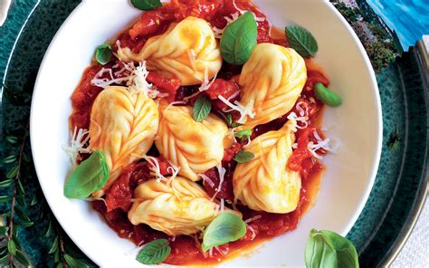
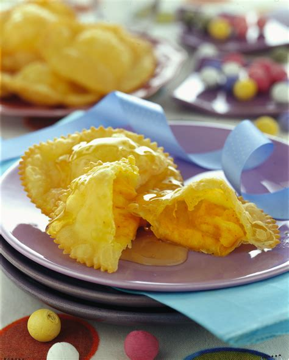
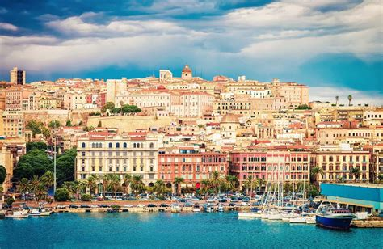

Sardegna
Panoramica
La Sardegna è la seconda isola più grande del Mar Mediterraneo, situata a ovest della penisola italiana. È una regione autonoma con una cultura, una lingua e una cucina uniche. È conosciuta per le sue spiagge cristalline, i nuraghi preistorici e le sue tradizioni millenarie.
Fatti in Breve
- Capoluogo: Cagliari
- Lingua regionale: Sardo (Sardu)
- Popolazione: Circa 1,6 milioni
- Famosa per: Nuraghi, spiagge, cultura sarda
- Curiosità: La Sardegna è una delle “Blue Zones” dove molte persone vivono oltre i 100 anni!
Piatti Tipici
Porceddu

Pane carasau

Culurgiones

Seadas

Luoghi Famosi
Su Nuraxi di Barumini

Costa Smeralda

Cagliari

Grotta di Nettuno

Quando Visitare
I mesi ideali per visitare la Sardegna sono maggio, giugno, settembre e ottobre, quando il clima è mite, le spiagge sono tranquille e la natura è rigogliosa.
Simboli Regionali
- Bandiera:
- Stemma: